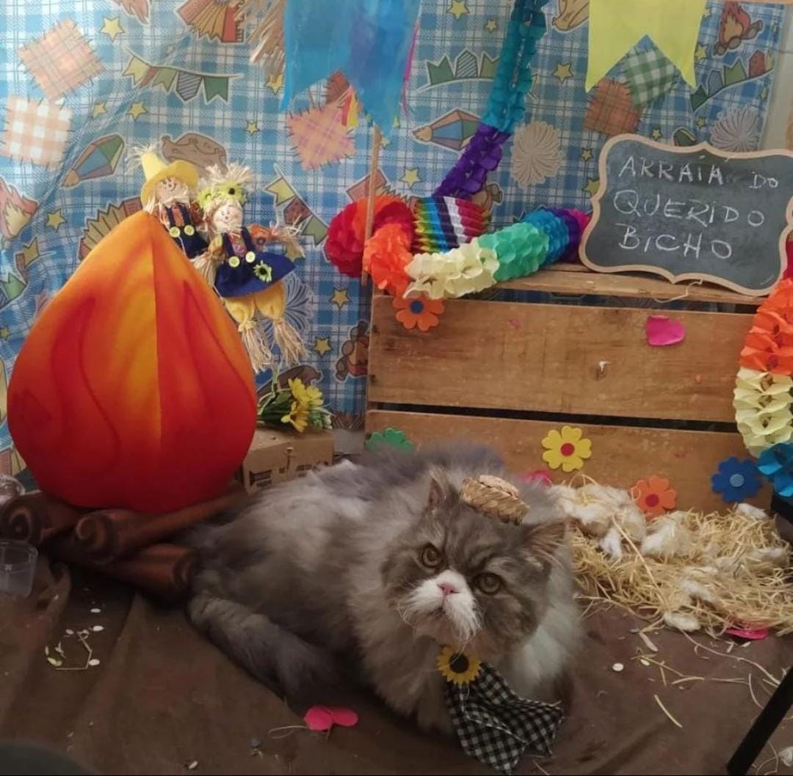

PET SHOP QUERIDO BICHO
horarios de segunda a sexta
APRESENTAÇÃO
olá me chamo evellyn, trabalho atualmente na aerea de banho e tosa, formada em curso de auxiliar e em tecnico de veterinaria, e com formação em 2018 em banho e tosa na escola "Belas Patas", atendemos de segunda a sabado trabalhando com banho e tosa, com serviço de taxi dog,
Nosso diferencial
um de nossos maior diferencial é nossos enfeites (chapeus, gravatas, colares, saias,etc) criados a mão com temas especiais e nossas foto em painel com temas exclusivos conforme o tema dos enfeites.
outra de nossas vantagens é a agilidade no atendimento, consseguindo fazer um pre agendamento pelo nosso site confirmando apenas horario, serviço prestado e endereço quando se enquadrar
usamos shampoo da linha Special Vet com um otimo desempenho para limpar seu pet sem prejudicar a pele
tabela de preço (agendamento aperte botão agendar ao lado do principal)
etapas do banho
muitos pensa que o banho é apenas passar shampoo e agua, mais este pensamento esta errado, algumas das etapas são:
DIFERENÇAS DAS TOSAS
tosa na maquina (com antes e depois)